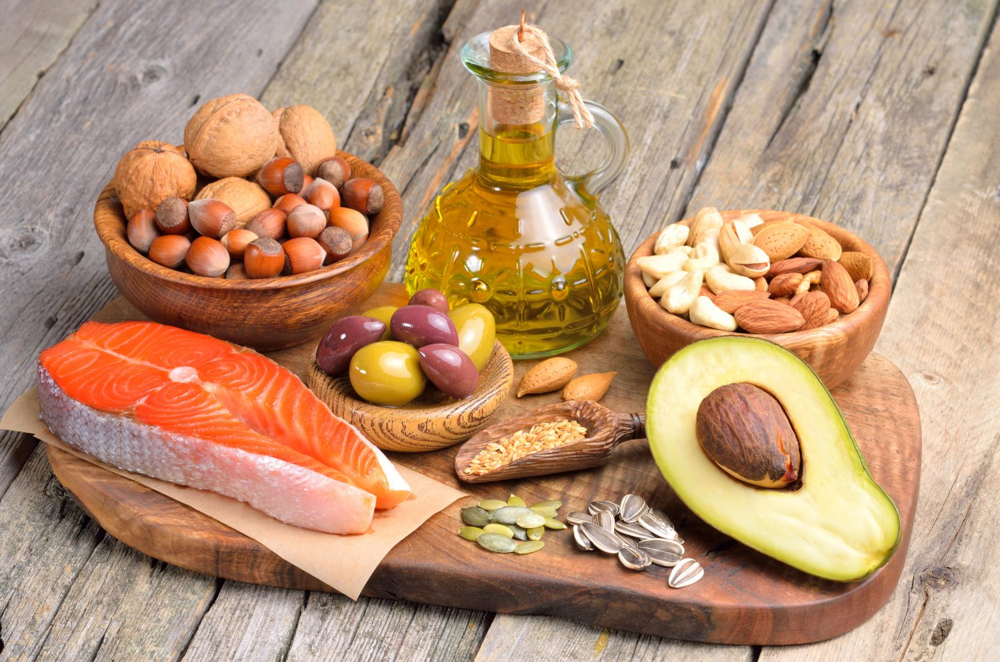

FATTY ACIDS SYNTHESIS

Fatty acid synthesis is the creation of fatty acids from acetyl-CoA and NADPH through the action of enzymes called fatty acid synthases. This process takes place in the cytoplasm of the cell. Most of the acetyl-CoA which is converted into fatty acids is derived from carbohydrates via the glycolytic pathway. The glycolytic pathway also provides the glycerolwith which three fatty acids can combine (by means of ester bonds) to form triglycerides (also known as "triacylglycerols", to distinguish them from fatty "acids" - or simply as "fat"), the final product of the lipogenicprocess. When only two fatty acids combine with glycerol and the third alcohol group is phosphorylated with a group such as phosphatidylcholine, a phospholipid is formed. Phospholipids form the bulk of the lipid bilayers that make up cell membranes and surround the organelles within the cells (e.g. the cell nucleus, mitochondria, endoplasmic reticulum, Golgi apparatus etc.)
Straight-chain fatty acids
Straight-chain fatty acids occur in two types: saturated and unsaturated.
Saturated straight-chain fatty acids

Much like β-oxidation, straight-chain fatty acid synthesis occurs via the six recurring reactions shown below, until the 16-carbon palmitic acid is produced.
The diagrams presented show how fatty acids are synthesized in microorganisms and list the enzymes found in Escherichia coli. These reactions are performed by fatty acid synthase II (FASII), which in general contain multiple enzymes that act as one complex. FASII is present in prokaryotes, plants, fungi, and parasites, as well as in mitochondria.
In animals, as well as some fungi such as yeast, these same reactions occur on fatty acid synthase I (FASI), a large dimeric protein that has all of the enzymatic activities required to create a fatty acid. FASI is less efficient than FASII; however, it allows for the formation of more molecules, including "medium-chain" fatty acids via early chain termination.
Once a 16:0 carbon fatty acid has been formed, it can undergo a number of modifications, resulting in desaturation and/or elongation. Elongation, starting with stearate (18:0), is performed mainly in the ER by several membrane-bound enzymes. The enzymatic steps involved in the elongation process are principally the same as those carried out by FAS, but the four principal successive steps of the elongation are performed by individual proteins, which may be physically associated.
| STEP | ENZYME | REACTION | DESCRIPTION |
|---|---|---|---|
| 1 | Acetyl CoA:ACP transacylase | INI ISINYA REAKSI WOY | ISINYA DESKRIPSI COY |
| 2 | Jacob | Thornton | @fat |
| 3 | Larry | the Bird | |
| 3 | Larry | the Bird | |
| 3 | Larry | the Bird | |
| 3 | Larry | the Bird |
Note that during fatty synthesis the reducing agent is NADPH, whereas NAD is the oxidizing agent in beta-oxidation (the breakdown of fatty acids to acetyl-CoA). This difference exemplifies a general principle that NADPH is consumed during biosynthetic reactions, whereas NADH is generated in energy-yielding reactions.(Thus NADPH is also required for the synthesis of cholesterol from acetyl-CoA; while NADH is generated during glycolysis.) The source of the NADPH is two-fold. When malate is oxidatively decarboxylated by “NADP+-linked malic enzyme" to form pyruvate, CO2 and NADPH are formed. NADPH is also formed by the pentose phosphate pathway which converts glucose into ribose, which can be used in synthesis of nucleotides and nucleic acids, or it can be catabolized to pyruvate.
Glycolytic end products are used in the conversion of carbohydrates into fatty acids
In humans, fatty acids are formed from carbohydrates predominantly in the liver and adipose tissue, as well as in the mammary glands during lactation.
The pyruvate produced by glycolysis is an important intermediary in the conversion of carbohydrates into fatty acids and cholesterol. This occurs via the conversion of pyruvate into acetyl-CoA in the mitochondrion. However, this acetyl CoA needs to be transported into cytosol where the synthesis of fatty acids and cholesterol occurs. This cannot occur directly. To obtain cytosolic acetyl-CoA, citrate (produced by the condensation of acetyl CoA with oxaloacetate) is removed from the citric acid cycle and carried across the inner mitochondrial membrane into the cytosol. There it is cleaved by ATP citrate lyase into acetyl-CoA and oxaloacetate. The oxaloacetate can be used for gluconeogenesis (in the liver), or it can be returned into mitochondrion as malate.The cytosolic acetyl-CoA is carboxylated by acetyl CoA carboxylase into malonyl CoA, the first committed step in the synthesis of fatty acids.
Animals cannot resynthesize carbohydrates from fatty acids
The main fuel stored in the bodies of animals is fat. The young adult human’s fat stores average between about 10–20 kg, but varies greatly depending on age, gender, and individual disposition.By contrast the human body stores only about 400 g of glycogen, of which 300 g is locked inside the skeletal muscles and is unavailable to the body as a whole. The 100 g or so of glycogen stored in the liver is depleted within one day of starvation. Thereafter the glucose that is released into the blood by the liver for general use by the body tissues, has to be synthesized from the glucogenic amino acids and a few other gluconeogenic substrates, which do not include fatty acids.
Fatty acids are broken down to acetyl-CoA by means of beta oxidation inside the mitochondria, whereas fatty acids are synthesized from acetyl-CoA outside the mitochondrion, in the cytosol. The two pathways are distinct, not only in where they occur, but also in the reactions that occur, and the substrates that are used. The two pathways are mutually inhibitory, preventing the acetyl-CoA produced by beta-oxidation from entering the synthetic pathway via the acetyl-CoA carboxylase reaction. It can also not be converted to pyruvate as the pyruvate decarboxylation reaction is irreversible. Instead it condenses with oxaloacetate, to enter the citric acid cycle. During each turn of the cycle, two carbon atoms leave the cycle as CO2 in the decarboxylation reactions catalyzed by isocitrate dehydrogenase and alpha-ketoglutarate dehydrogenase. Thus each turn of the citric acid cycle oxidizes an acetyl-CoA unit while regenerating the oxaloacetate molecule with which the acetyl-CoA had originally combined to form citric acid. The decarboxylation reactions occur before malate is formed in the cycle. This is the only substance that can be removed from the mitochondrion to enter the gluconeogenic pathway to form glucose or glycogen in the liver or any other tissue. There can therefore be no net conversion of fatty acids into glucose.
Only plants possess the enzymes to convert acetyl-CoA into oxaloacetate from which malate can be formed to ultimately be converted to glucose.
Branched-chain fatty acids
Branched-chain fatty acids are usually saturated and are found in two distinct families: the iso-series and anteiso-series. It has been found that Actinomycetales contain unique branch-chain fatty acid synthesis mechanisms, including that which forms tuberculosteric acid.
Branch-chain fatty acid synthesizing system

The branched-chain fatty acid synthesizing system uses α-keto acids as primers. This system is distinct from the branched-chain fatty acid synthetase that utilizes short-chain acyl-CoA esters as primers. α-Keto acid primers are derived from the transamination and decarboxylation of valine, leucine, and isoleucine to form 2-methylpropanyl-CoA, 3-methylbutyryl-CoA, and 2-Methylbutyryl-CoA, respectively. 2-Methylpropanyl-CoA primers derived from valine are elongated to produce even-numbered iso-series fatty acids such as 14-methyl-pentadecanoic (isopalmitic) acid, and 3-methylbutyryl-CoA primers from leucine may be used to form odd-numbered iso-series fatty acids such as 13-methyl-tetradecanoic acid. 2-Methylbutyryl-CoA primers from isoleucine are elongated to form anteiso-series fatty acids containing an odd number of carbon atoms such as 12-Methyl tetradecanoic acid. Decarboxylation of the primer precursors occurs through the branched-chain α-keto acid decarboxylase (BCKA) enzyme. Elongation of the fatty acid follows the same biosynthetic pathway in Escherichia coli used to produce straight-chain fatty acids where malonyl-CoA is used as a chain extender. The major end products are 12–17 carbon branched-chain fatty acids and their composition tends to be uniform and characteristic for many bacterial species.
BCKA decarboxylase and relative activities of α-keto acid substrates
The BCKA decarboxylase enzyme is composed of two subunits in a tetrameric structure (A2B2) and is essential for the synthesis of branched-chain fatty acids. It is responsible for the decarboxylation of α-keto acids formed by the transamination of valine, leucine, and isoleucine and produces the primers used for branched-chain fatty acid synthesis. The activity of this enzyme is much higher with branched-chain α-keto acid substrates than with straight-chain substrates, and in Bacillus species its specificity is highest for the isoleucine-derived α-keto-β-methylvaleric acid, followed by α-ketoisocaproate and α-ketoisovalerate.[23][24] The enzyme’s high affinity toward branched-chain α-keto acids allows it to function as the primer donating system for branched-chain fatty acid synthetase.
| STEP | ENZYME | REACTION | DESCRIPTION | |
|---|---|---|---|---|
| 1 | Acetyl CoA:ACP transacylase | INI ISINYA REAKSI WOY | ISINYA DESKRIPSI COY | |
| 2 | Jacob | Thornton | @fat | |
| 3 | Larry | the Bird | ||
| 3 | Larry | the Bird | ||
| 3 | Larry | the Bird | ||
| 3 | Larry | the Bird |
Factors affecting chain length and pattern distribution
α-Keto acid primers are used to produce branched-chain fatty acids that, in general, are between 12 and 17 carbons in length. The proportions of these branched-chain fatty acids tend to be uniform and consistent among a particular bacterial species but may be altered due to changes in malonyl-CoA concentration, temperature, or heat-stable factors (HSF) present. All of these factors may affect chain length, and HSFs have been demonstrated to alter the specificity of BCKA decarboxylase for a particular α-keto acid substrate, thus shifting the ratio of branched-chain fatty acids produced. An increase in malonyl-CoA concentration has been shown to result in a larger proportion of C17 fatty acids produced, up until the optimal concentration (≈20μM) of malonyl-CoA is reached. Decreased temperatures also tend to shift the fatty-acid distribution slightly toward C17 fatty-acids in Bacillus species.
Branch-chain fatty acid synthase
This system functions similarly to the branch-chain fatty acid synthesizing system, however it uses short-chain carboxylic acids as primers instead of alpha-keto acids. In general, this method is used by bacteria that do not have the ability to perform the branch-chain fatty acid system using alpha-keto primers. Typical short-chain primers include isovalerate, isobutyrate, and 2-methyl butyrate. In general, the acids needed for these primers are taken up from the environment; this is often seen in ruminal bacteria.
The overall reaction is:
Isobutyryl-CoA + 6 malonyl-CoA +12 NADPH + 12H+ → Isopalmitic acid + 6 CO2 12 NADP + 5 H2O + 7 CoA
The difference between (straight-chain) fatty acid synthase and branch-chain fatty acid synthase is substrate specificity of the enzyme that catalyzes the reaction of acyl-CoA to acyl-ACP.
Omega-alicyclic fatty acids
Omega-alicyclic fatty acids typically contain an omega-terminal propyl or butyryl cyclic group and are some of the major membrane fatty acids found in several species of bacteria. The fatty acid synthetase used to produce omega-alicyclic fatty acids is also used to produce membrane branched-chain fatty acids. In bacteria with membranes composed mainly of omega-alicyclic fatty acids, the supply of cyclic carboxylic acid-CoA esters is much greater than that of branched-chain primers. The synthesis of cyclic primers is not well understood but it has been suggested that mechanism involves the conversion of sugars to shikimic acid which is then converted to cyclohexylcarboxylic acid-CoA esters that serve as primers for omega-alicyclic fatty acid synthesis
Tuberculostearic acid synthesis
Tuberculostearic acid (D-10-Methylstearic acid) is a saturated fatty acid that is known to be produced by Mycobacterium spp. and two species of Streptomyces. It is formed from the precursor oleic acid (a monounsaturated fatty acid). After oleic acid is esterified to a phospholipid, S-adenosyl-methionine donates a methyl group to the double bond of oleic acid. This methylation reaction forms the intermediate 10-methylene-octadecanoyal. Successive reduction of the residue, with NADPH as a cofactor, results in 10-methylstearic acid